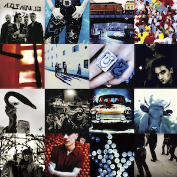
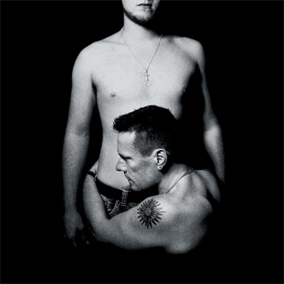

U2 albums

Boy (1980)

October (1981)

War (1983)

The Unforgettable Fire (1984)

Joshua Tree (1987)

Rattle and Hum (1988)

Achtung Baby (1991)

Zooropa (1993)
Pop (1997)

All the Things You Leave Behind (2000)

How to Dismantle a Atomic Bomb (2004)

No Line on the Horizon (2009)

Songs of Innocence (2014)
Songs of Experience (2017)